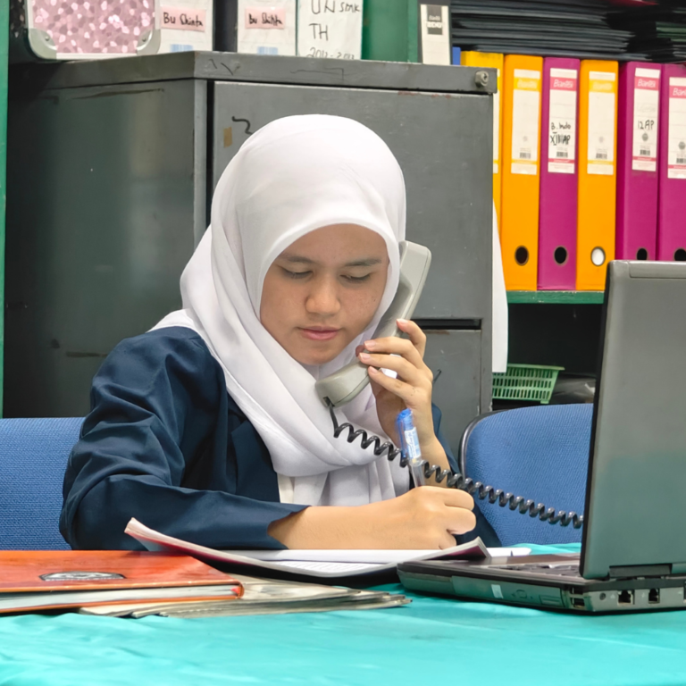
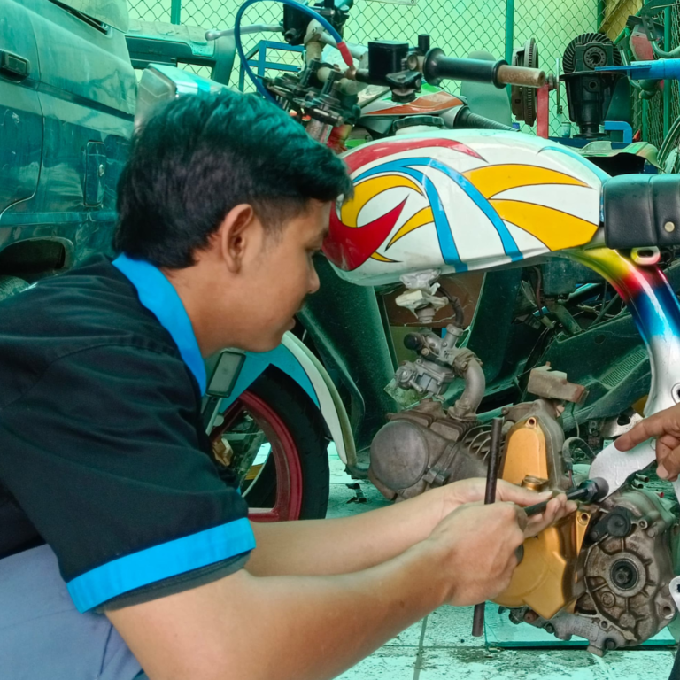

Teknik Komputer & Jaringan
Pembelajaran kejuruan bidang komputer dan jaringan dengan penekanan pada keterampilan praktik.
SEKOLAH MENENGAH KEJURUAN
Pembelajaran kejuruan melalui praktik, keterampilan, dan persoalan nyata untuk mengenalkan siswa pada kebutuhan dunia kerja.


PROFIL SEKOLAH
SMK Amanah memusatkan pendidikan kejuruan pada praktik dan pemecahan persoalan yang ditemui di dunia kerja. Bidang belajar meliputi Teknik Komputer dan Jaringan, Manajemen Perkantoran, serta Teknik Otomotif. Penggunaan teknologi menjadi bagian dari pembelajaran untuk mengembangkan keterampilan sesuai bidang siswa.
Lihat program belajarPembelajaran yang berfokus pada praktik
Kompetensi sesuai bidang kejuruan
Pemanfaatan teknologi dalam belajar
SMK AMANAH
Tiga jurusan keahlian dan program pembinaan olahraga.
Pembelajaran kejuruan bidang komputer dan jaringan dengan penekanan pada keterampilan praktik.
Pembelajaran untuk mengenal pekerjaan administrasi dan pengelolaan perkantoran.
Pembelajaran bidang otomotif melalui praktik dan keterampilan teknis.
Pembinaan futsal dan bola voli melalui latihan yang terarah, disiplin, dan berkelanjutan.
BERITA SEKOLAH
LOKASI SEKOLAH
Alamat sekolah dan petunjuk arah untuk merencanakan kunjungan.
Peta bisa diperbesar dan digeser. Untuk navigasi perjalanan, buka petunjuk arah di Google Maps.